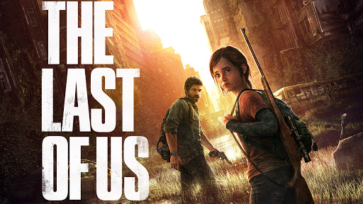

God of War
Помстившись богам Олімпу, Кратос живе в царстві скандинавських божеств і чудовиськ.
У цьому суворому і нещадному світі він повинен не тільки самостійно боротися за виживання, а й навчити цьому
свого сина ... намагаючись не дати йому повторити заплямовані кров'ю помилки, вчинені самим Примарою Спарти.
Це вражаюче переосмислення історії God of War поєднує в собі всі відмінні риси культової серії - люті битви,
епічні бої з босами і захоплюючий масштаб того, що відбувається - і підкріплює їх потужним і зворушливим
сюжетом, що привносить нові фарби в світ Кратос.
Horizon Zero Dawn
В епоху, коли світ заполонили здичавілі машини, а людство перестало бути домінуючим видом, молода мисливиця Елой
відправляється в подорож назустріч долі.
Сюжет розвивається в світі майбутнього, де людство повернулося до первісно-общинного ладу, а господарями планети
стали роботи-динозаври. Головна героїня, Елой, довгі роки провела в ізоляції, але все ж таки зважилася
відправитися в повні небезпеки шлях, щоб дізнатися, що поставило колись розвинене людство на грань виживання.
Marvel's Spider-Man
Почніть нову главу у всесвіті Marvel Людина-павук, граючи за більш досвідченого Пітера Паркера.
В Marvel Людина-павук ви будете грати за одного з найбільш культових супергероїв світу, майстри павутини,
відомого своїми акробатичними здібностями і талантом до імпровізації, а також зможете насолодитися новими
особливостями ігрового процесу, які раніше не з'являлися в іграх про Людину-Павука.
Переміщення по світу за допомогою паркура, унікальні можливості взаємодії з навколишнім середовищем, нові бойові
навички і запаморочливі битви - такого ви ще не бачили в іграх про Людину-Павука.
The Last of Us

У ворожому, спустошеному епідемією світі Джоел і Еллі, яких трагічна доля звела разом, можуть покладатися тільки
один на одного, щоб пережити повне небезпек подорож по території колишніх Сполучених Штатів.
За сюжетом гри, людство уражено чумою 21 століття — так званим Cordyceps грибком, який широко використовувався в
косметології по всьому світу. З невідомих причин, грибок став мутувати, і людство опинилося під загрозою
вимирання.
Міста були знищені, а на їх руїнах буйно розкинулася матінка-природа, відвойовуючи спорожнілі території. Замість
того, щоб згуртуватися, люди воюють між собою за їжу та інші необхідні для існування ресурси. У таких ось
безрадісних умовах і доводиться існувати героям The Last of Us — чоловікові з туманним минулим на ім'я Джоел і
дівчинці-підлітку Еллі.
Detroit: Become Human
НАСКІЛЬКИ ДАЛЕКО ВИ ЗВАЖИТЕСЯ ЗАЙТИ, ЩОБ ОТРИМАТИ СВОБОДУ?
Детройт, 2038 рік. Схожі на людей андроїди стали основною робочою силою на планеті.
Вони ніколи не втомлюються, завжди слухають своїх господарів і ніколи не говорять «Ні» ... але одного разу все
змінилося.
Деякі андроїди почали вести себе не так, як зазвичай, немов у них з'явилася здатність відчувати почуття ...
Тепер вам належить управляти трьома андроидами, щоб допомогти їм зрозуміти, хто ж вони насправді.
Ваші дії і рішення визначать їхню долю - а може, навіть і майбутнє всього міста.
Death Stranding
Сем Бріджес повинен наважитися подолати світ, трансформований петлею смерті. Тримаючи в своїх руках нескладні
залишки нашого майбутнього, він відправляється в дорогу, щоб відновити зв'язок між осколками світу.
У найближчому майбутньому земну кулю струсонули таємничі вибухи, що стали причиною виникнення ряду надприродних
явищ, відомих як Вихід смерті.
Сем Портер Бріджес повинен врятувати людство, відправившись в дорогу по цим
розореним пустками, незважаючи на присутність потойбічних істот і постійну загрозу масового знищення.
Ігрова індустрія не стоїть на місці. У світі продано не менше 100 мільйонів екземплярів Sony PlayStation.
Щорічно в світ виходять нові випуски консольних ігор, поповнюючи колекції геймерських бестселерів.
Подорож по місту на павутіні, урівайтеся в битву або відірвіться по повній в кращих Іграх для PS4, Які Вже
Вийшла.
| The Last of Us |
Рейтинг критиків: 10
Рейтинг гравців: 8,9
|
| God of War |
Рейтинг критиків: 9,3
Рейтинг гравців: 9
|
| Marvel’s Spider-Manr |
Рейтинг критиків: 8,6
Рейтинг гравців: 8,5
|
| Horizon Zero Dawn |
Рейтинг критиків: 8,9
Рейтинг гравців: 8,5
|
| Detroit: Become Human |
Рейтинг критиків: 8,6
Рейтинг гравців: 8,1
|